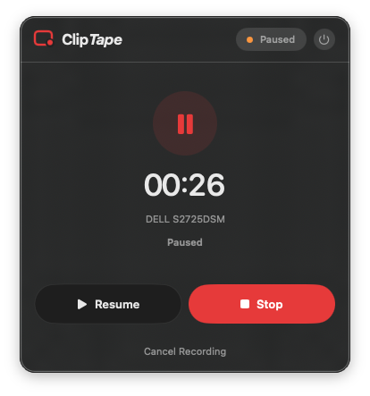

Record your Mac.
Keep the file.
MacTape is a focused, open-source screen recorder that lives in your menu bar. Press record. Do the thing. Press stop. Get an ordinary MP4, saved on your Mac.

A short feature list,
on purpose.
No editor. No AI. No timeline, library, or project format to learn. MacTape does the handful of things a screen recorder actually needs to do, and it does them where you already are, in the menu bar.
Display or window
Pick a whole display or one individual window. MacTape discovers what is available and captures exactly that.
System audio
Capture the sound coming out of your Mac alongside the picture, in the same file.
Optional microphone
Add your voice when you want it. Microphone permission is only ever requested once you turn the microphone on.
Clean pause and resume
Pause, take a breath, resume. The paused gap never lands in the finished recording.
PNG screenshots
The Shot button captures a still at the same output resolution you picked for video.
Cancel without residue
Change your mind mid-take and cancel. No orphaned temporary segments left behind on disk.
Choose your resolution.
Keep the source pixels, or scale the output down to something more shareable. The same setting applies to recordings and to PNG screenshots.
Recordings finish as H.264 MP4 files in the save folder you choose. Nothing proprietary, nothing to export.
Pause. Resume.
No dead air.
Most recorders make you choose between stopping cold and leaving a long silent gap in the middle of your take. MacTape stitches the recording back together so the paused time simply isn't there.
Illustrative timing. The paused stretch is removed, not silenced.
MacTape is always explicit about where it is. Every state is visible in the window before you commit to anything.

Your recordings never leave your Mac.
This is not merely a policy you have to trust. It is a property of the software. Screen and audio content is written straight to the folder you picked, and that is the end of the story.
- Runs inside the macOS App Sandbox with a hardened runtime.
- Screen Recording permission is requested when capture access is needed.
- Microphone permission is requested only if you enable the microphone.
- No camera, contacts, location, calendar, photo library, or accessibility access.
- Finished recordings are never uploaded, indexed, transcribed, or inspected.
- Deleting MacTape does not delete recordings saved outside the app.
Native Swift, top to bottom.
No Electron, no bundled web view, no cross-platform runtime. MacTape is built on the frameworks Apple ships for exactly this job, which is why it needs macOS 15 or newer.
LSUIElement), so no Dock icon and no windows to manage.Clone it. Build it. Record.
MacTape is preparing its first public beta, so today the way in is to build from source.
xcodegen generate in the repository root.MacTape.xcodeproj.MacTape scheme.MacTape is a menu bar app, so nothing appears in the Dock. Click the record-circle in your menu bar to open it. macOS will ask for Screen Recording permission the first time capture access is needed.
Press record.
Do the thing.
Press stop.
That's the whole product. The file is already on your Mac.